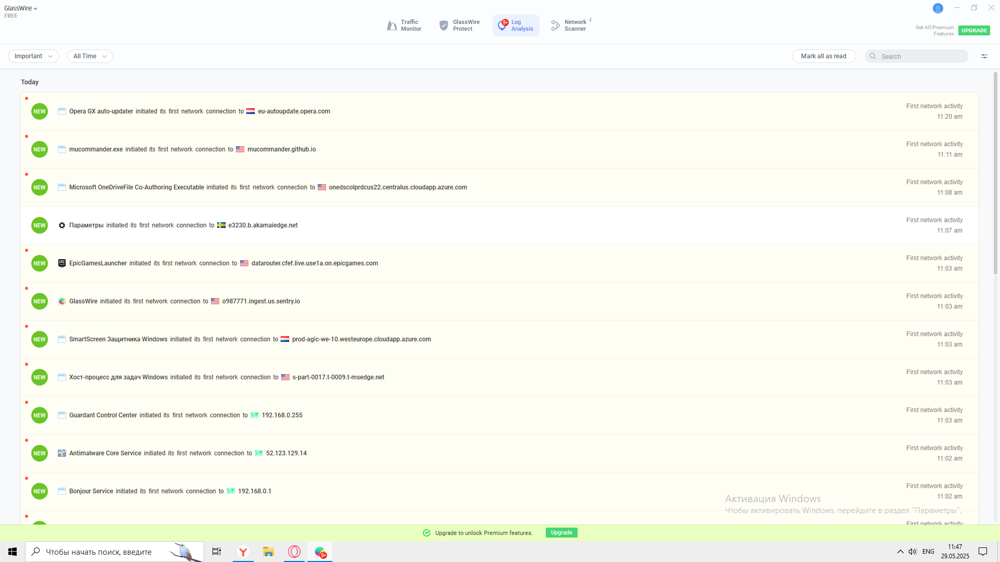
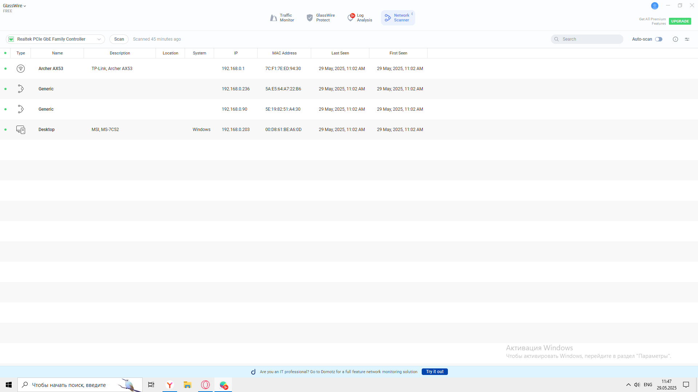
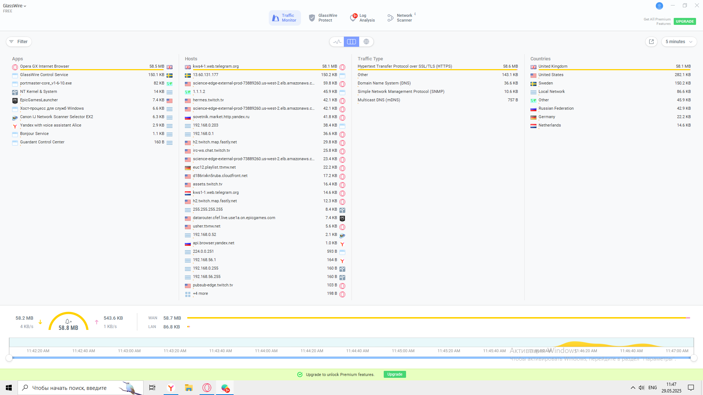
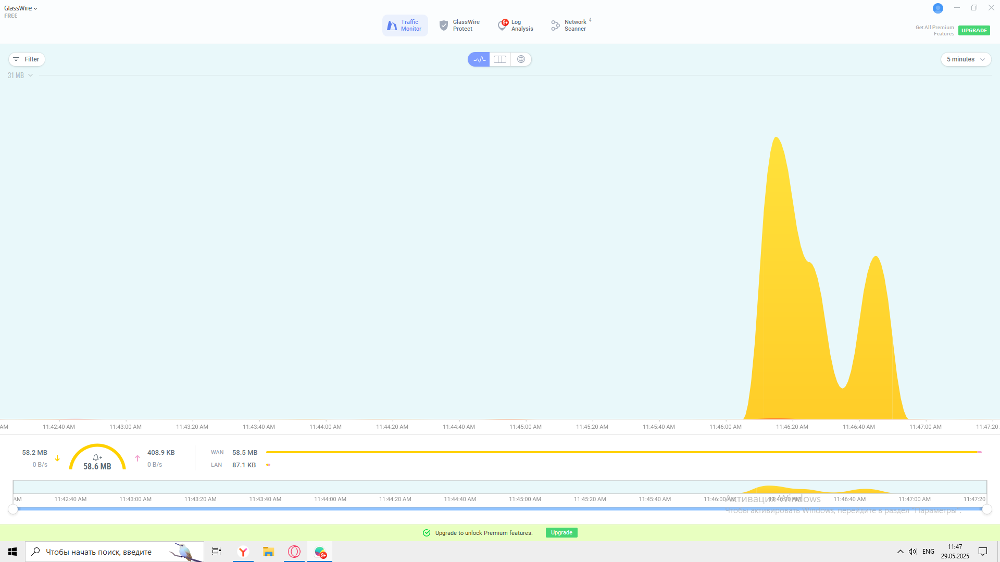
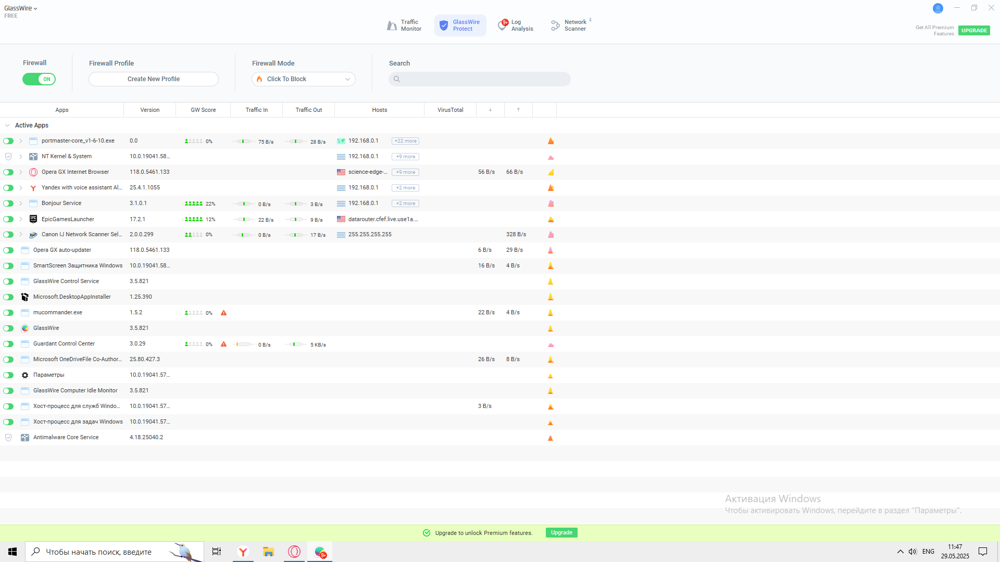

GlassWire — это мощный сетевой экран и инструмент для мониторинга интернет-соединений. Он предоставляет визуальную информацию о текущей активности в сети, позволяет отслеживать потенциально опасные соединения и управлять доступом к интернет-ресурсам.
Преимущества
Интуитивно понятный интерфейс: Удобный и красивый интерфейс, подходящий для пользователей с разным уровнем знаний.
Подробный мониторинг сети: Отображает все сетевые соединения в реальном времени, показывая информацию о возможных угрозах.
Безопасность и конфиденциальность: Предоставляет функции защиты от нежелательных программ и контролирует доступ к сети.
Недостатки
Платность: Основные функции доступны только в платной версии программы.
Зависимость от Windows: Программа в основном ориентирована на операционную систему Windows, что ограничивает её совместимость с другими платформами.
Ресурсоёмкость: Может потреблять значительные ресурсы системы, особенно при длительном использовании на слабых устройствах.
1. Раздел "Graphic - net"

Этот раздел отображает информацию о первых сетевых подключениях различных приложений и сервисов, а также их активность.
Important
Категория: Trading
Мониторинг сетевой активности, связанной с торговыми операциями или обменом данными.
Open GC auto-updater: Подключение к datainfosoftxt.opera.com.
Microsoft ChatDriverFile Co-Authoring Executable: Подключение к eventdesignfound22.entrunda.shoutinga.samz.com.
SmartScreen Защитника Windows: Подключение к open-alge-use-10.windowsgp.shoutinga.samz.com.
Guardatel Comfort: Подключение к локальному IP 192.168.2.555 (некорректный IP).
First network activity: 11.00 am, 11.11 am
Accru Bau us Windows. Mobile eenerappeans.Windows.neipoldurre o passon 'Просветка'.
Поиск: поле ввода с упоминанием Premium Resource
Для чего нужен раздел?
Мониторинг первых сетевых подключений приложений.
Выявление подозрительных или нежелательных соединений.
Контроль времени и частоты сетевой активности.
2. Раздел "Graphics - DEE"

Этот раздел предоставляет детализированные результаты контроля сетевых устройств и их активности.
Results: Pico del Family Controller
Action A253: IP 192.168.0.1, описание: PCF17-XE03-4303, время активности: 29 May, 2021, 11:02 AM.
Generic устройства:
– IP 192.168.0.236, описание A2.E5/A4.27.22.56.
– IP 192.168.0.99, описание XE17-SE21-A4.09.
Desktop: MSL M6-YG2, Windows, IP 192.168.0.203, MAC 00:06:14 SEAA600.
Accrualizing Windows. Include arrangements.Windows. перейдите в раздел 'Параметры'.
Для чего нужен раздел?
Контроль подключённых устройств в локальной сети.
Отслеживание активности и технических параметров устройств.
Выявление несанкционированных устройств.
Общие функции Wireglass
Мониторинг сетевых подключений.
Анализ первых соединений приложений.
Выявление подозрительных доменов или IP-адресов.
Управление устройствами в сети.
Интеграция с настройками Windows.
Доступ к премиум-функциям (например, расширенному поиску).
Что произойдёт, если...
Заблокировать подозрительное подключение: предотвращение утечки данных.
Проверить устройство с некорректным IP: возможна ошибка.
Перейти в "Параметры" Windows: откроются системные настройки сети.
3. Раздел "Интерфейс Time"

Этот раздел представляет собой интегрированную панель мониторинга сетевой активности, объединяя в одном интерфейсе данные по приложениям, хостам, типам трафика и геолокации. Подобные интерфейсы встречаются в GlassWire, Wireshark или в корпоративных решениях для анализа сети.
Секция "App" — Список приложений
Включает процессы, взаимодействующие с сетью:
Браузеры и офисные приложения: Open 5G Internet Browser, Microsoft PowerPoint, Edge Workmodel.
Анализ протоколов помогает обнаружить аномалии и угрозы.
Секция "Countries" — Геолокация трафика
Основные страны: США, Германия, Япония, Китай.
Несоответствия: пары типа Portugal:Japan, India:Italy.
Геоанализ позволяет обнаружить неожиданные или поддельные подключения.
Дополнительные элементы
Worldwide website: monoc_executive — возможно, сервер управления.
Рекомендации
Блокировать подозрительные приложения и хосты.
Анализировать нестандартные протоколы и геоадресацию.
Следить за "фальшивыми" названиями и аномалиями.

4. Раздел "Интерфейс Classories"

Данный раздел представляет собой панель Firewall, предназначенную для контроля сетевой активности приложений. Это может быть интерфейс GlassWire или аналогичного средства мониторинга.
Элементы управления Firewall
Firewall Profile: выбор профиля ("Public", "Private", "Custom").
Firewall Mode: режим работы ("Strict", "Balanced", "Off").
Search: поиск процессов.
Create New Profile: создание правил и фильтров.
Click to Block: моментальная блокировка приложений.
Используется для настройки безопасности и фильтрации подозрительного трафика.
Таблица активных приложений
В таблице отображаются параметры процессов:
Параметр
Описание
Пример
Active Apps
Имя процесса
Open 0.5 Internet Browser
Version
Версия приложения
116.6.564.133
Opt Score
Оценка доверия
8.4:11.2
Traffic In/Out
Трафик (вход/выход)
0.0 / 256.8%
Notes
Доп. информация
106.9.68.8
Voutil Red
Нагрузка или системный параметр
(32,000)
+
Действия
/
Представлены как системные, так и подозрительные процессы: renderer-in-the-art, Start-on-sales и др.
Подозрительные записи
Некорректные версии: например, 116.6.564.133.
Странные имена: renderer-in-the-art.
Повторяющиеся IP-адреса: 106.9.68.8 у разных приложений.
Следует проверять такие записи на вредоносную активность и при необходимости блокировать.
Premium-функции
Внизу раздела указано: Upgrade to unlock Premium features. [Please you password our name.]
Это может быть частью тестового интерфейса или напоминанием о подписке.
Ключевые возможности
Реальный мониторинг трафика и подключений.
Блокировка и фильтрация трафика в 1 клик.
Анализ угроз по Opt Score, IP, подозрительным признакам.
Создание пользовательских профилей для разных сетей.